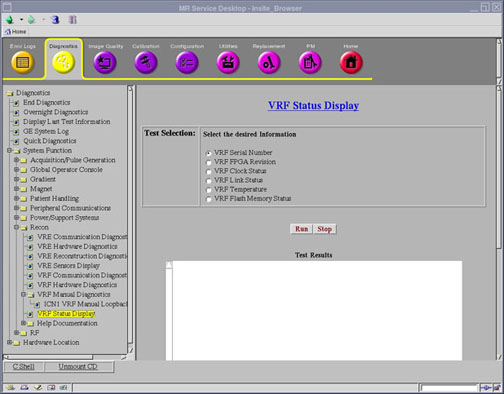
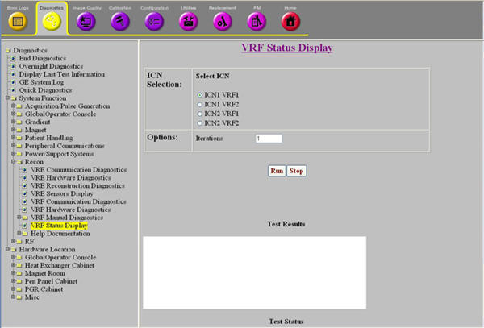

Operating Documentation
Direction 5440001-3, Rev# 6
Signa HDxt Service Methods
Module Version 6.0, Version Date 8/25/10
Operating Documentation |
Diagnostics → System Function → Recon → VRF Status Display
Diagnostics → Hardware Location → PGR Cabinet → Recon → VRF Status Display
Illustration 1: VRF Status Display for Software Revisions Pre-22.x

Illustration 2: VRF Status Display for Software Revisions 22.x and higher

The purpose of the VRF Status Display diagnostic is to display the internal status of the VRF. This diagnostic can be used for further debugging if the VRF hardware or communication diagnostics fail.
VRF serial number
FPGA firmware version and temperatures
Status of the VRF clock input, Flash memory, and VRF fiber links
No special requirements.
| NOTE: | Observe the following:
|
Select the VRF Status Display diagnostic.
Select the ICN/VRF you would like to conduct the test. You can only select one option.
Your test options are:
ICN1 VRF1
ICN1 VRF2
ICN2 VRF1
ICN2 VRF2
Each execution will check the following status of the selected VRF.
VRF Serial Number
VRF FPGA Revision
VRF Clock Status
VRF Link Status
VRF Temperature
Click [Run].
Ensure that the VRF passes the diagnostic by reviewing the status in the Test Results section.
This diagnostic has either a pass or fail status.
If the selected test passes, the Test Results table displays the requested information.
If the test fails, review the error log and corresponding extended error messages for subsequent actions.